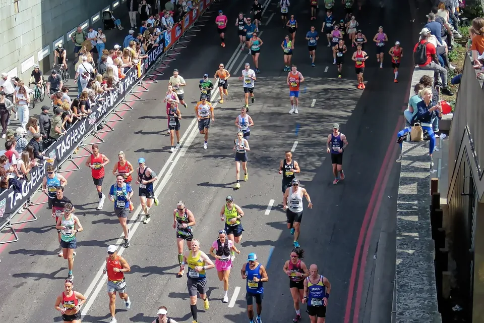

Tapering: Warum weniger Training vor dem Rennen dich schneller macht
London Marathon 2026, Upper Thames Street. Foto: Acabashi, Wikimedia Commons, CC BY-SA 4.0

Die harte Arbeit ist getan, das Rennen steht vor der Tür – und plötzlich sollst du weniger trainieren? Genau das ist der Trick. In der Taper-Phase holt dein Körper nach, was er im Training aufgebaut hat. Hier erfährst du, wie sie funktioniert, was dabei in dir passiert und wie du sie richtig angehst.
Was ist Tapering?
„Taper“ kommt aus dem Englischen und bedeutet „sich verjüngen“, wie eine Kerze, die nach oben schmaler wird. Gemeint sind die letzten Tage oder Wochen vor einem wichtigen Wettkampf, in denen du dein Training deutlich zurückfährst. Das Ziel: Du sollst dich von den Belastungen der Vorbereitung erholen und am Renntag frisch und voller Energie an der Startlinie stehen[1].
Das klingt erst einmal paradox. Aber Training wirkt in zwei Richtungen: Es macht dich fitter – und gleichzeitig müde. Die Müdigkeit verfliegt schneller als die Fitness. Genau dieses Zeitfenster nutzt das Tapering: Die Ermüdung baut sich ab, die Form bleibt. Mathematische Modelle der Sportwissenschaft beschreiben den Effekt genau so – als Wiederherstellung von Fähigkeiten, die durch das harte Training vorübergehend gedämpft waren[2].
Bringt das wirklich etwas?
Ja – das gehört zu den am besten untersuchten Themen der Trainingswissenschaft:
- Eine Meta-Analyse aus 27 Studien zeigt einen deutlichen Leistungsgewinn durch eine Taper-Phase[3].
- Eine neuere Meta-Analyse speziell zu Ausdauersportlerinnen und -sportlern bestätigt: Nach dem Tapering waren die Leistungen im Zeitfahren und bei Ausdauertests signifikant besser[4].
- Und es gilt nicht nur für Profis: Eine Auswertung der Trainingsdaten von mehr als 158.000 Freizeit-Marathonläuferinnen und -läufern fand, dass ein konsequentes, dreiwöchiges Tapering mit einer um im Mittel 5 Minuten und 32 Sekunden schnelleren Zielzeit einherging – verglichen mit kaum reduziertem Training. Das sind 2,6 Prozent[5].
Die letzte Studie beobachtet nur Zusammenhänge, sie kann nicht beweisen, dass das Tapering allein die Zeit verbessert hat. Zusammen mit den kontrollierten Studien bei Leistungssportlern ergibt sich aber ein klares Bild.
Was im Körper passiert
Ein großer Übersichtsartikel hat zusammengetragen, wie sich der Körper in der Taper-Phase verändert[2]. Die wichtigsten Punkte:
Volle Energiespeicher
Die Glykogenspeicher in der Muskulatur – dein wichtigster Treibstoff bei langen Belastungen – füllen sich während des Taperings Schritt für Schritt auf[2]. Unterstützen kannst du das, indem du in den Tagen vor einem langen Rennen ausreichend Kohlenhydrate isst[8].
Mehr Sauerstofftransport
Studien beobachteten mehr Blut- und Erythrozytenvolumen, mehr Hämoglobin und mehr junge rote Blutkörperchen. Der Körper bildet also mehr neue Blutzellen, als er abbaut – das dürfte zu den Leistungsgewinnen beitragen[2].
Kräftigere und schnellere Muskelfasern
Besonders spannend sind die Befunde direkt aus dem Muskel. Bei Schwimmern wurden nach drei Wochen Tapering die schnellen Muskelfasern (Typ IIa) um 11 Prozent dicker, ihre Kraft stieg, und ihre Leistung verdoppelte sich mehr als. Die Schwimmzeiten verbesserten sich um rund 4 Prozent[6]. Bei Crossläufern mit etwa halbiertem Umfang verbesserten sich die Rennzeiten, und auch hier wurden die schnellen Fasern größer und leistungsfähiger[7]. Bei Radfahrern stiegen nach einer Woche Tapering mit gleicher Intensität, aber kürzeren Einheiten die Enzyme der Energiegewinnung in den Muskelfasern; die Verbesserung im 40-Kilometer-Zeitfahren hing eng damit zusammen[9].
Erholung, Schlaf und Kopf
Marker für Muskelschäden gehen zurück – ein Zeichen, dass sich der Körper vom Trainingsstress erholt[2]. Und auch der Kopf profitiert: Studien berichten von besserer Stimmung, weniger körperlichen Beschwerden, entspannterem Körpergefühl, besserem Schlaf und davon, dass sich die gleiche Belastung leichter anfühlt[2]. Du wirst also nicht nur fitter, du fühlst dich auch so.
So gehst du die Taper-Phase an
Die Forschung liefert erstaunlich klare Leitplanken[3][4]:
| Stellschraube | Was die Studien zeigen |
|---|---|
| Umfang | um 41–60 % reduzieren |
| Intensität | beibehalten – weiter auch zügige Abschnitte laufen |
| Häufigkeit | beibehalten – nicht einfach Trainingstage streichen |
| Dauer | am wirksamsten rund 2 Wochen; wirksam bis zu 3 Wochen |
| Verlauf | schrittweise zurückfahren statt von heute auf morgen |
Der vielleicht wichtigste Punkt: Spar am Umfang, nicht am Tempo. Wer in der Taper-Phase nur noch langsam läuft, riskiert, die Spritzigkeit zu verlieren. Intensive Einheiten helfen, die Trainingsanpassungen zu erhalten oder sogar weiter auszubauen, während der Umfang deutlich sinkt – ohne dass die Leistung leidet[1].
Auch die Daten der Freizeitläufer passen dazu: Am besten schnitten diejenigen ab, die ihren Umfang Woche für Woche konsequent senkten. Wer zwischendurch wieder mehr lief, profitierte weniger. Längere Taper-Phasen bis zu drei Wochen waren mit besseren Zeiten verbunden als kürzere[5].
Ein Beispiel für deinen Halbmarathon oder Marathon
So könnte das aussehen, wenn du in deiner stärksten Trainingswoche 50 Kilometer an vier Tagen gelaufen bist. Die Zahlen sind ein Beispiel, kein fester Plan:
- Zwei Wochen vor dem Rennen: rund 35 Kilometer, weiter an vier Tagen. Der lange Lauf wird kürzer, eine Einheit mit Abschnitten im Renntempo bleibt.
- Rennwoche: rund 20 bis 25 Kilometer, kurze lockere Läufe, dazu ein paar kurze Steigerungen oder ein, zwei Kilometer im Renntempo, damit sich die Beine schnell anfühlen.
- Die letzten ein, zwei Tage: ganz locker oder Ruhetag – so, wie es sich für dich gut anfühlt.
Für einen Marathon darf die Phase eher länger sein, für einen 10-Kilometer-Lauf genügen meist wenige Tage. Wichtig ist das Prinzip: weniger Kilometer, gleicher Rhythmus, ein bisschen Tempo.
Das „Taper-Gefühl“: ganz normal
Viele Läuferinnen und Läufer kennen es: In der Taper-Woche fühlen sich die Beine manchmal schwer an, man wird unruhig und fragt sich, ob man Form verliert. Keine Sorge – die Studien zeigen, dass der Umfang deutlich sinken kann, ohne dass die Leistung leidet[1]. Nutze die freie Zeit lieber für das, was im Trainingsalltag oft zu kurz kommt: früher ins Bett gehen, die Anreise planen, Startunterlagen und Ausrüstung bereitlegen und die Strecke anschauen. Und dann: Vorfreude.
Fazit
Tapering ist keine Faulheit, sondern der letzte Baustein deines Trainings. Zwei Wochen mit etwa halbiertem Umfang, gleichbleibender Trainingshäufigkeit und ein bisschen Tempo – und du stehst ausgeruht, mit vollen Speichern und frischen Beinen am Start. Den Rest erledigt der Renntag.
Finde dein nächstes Rennen
Für die Planung deiner Saison: alle Laufveranstaltungen in Deutschland, Österreich, der Schweiz und Südtirol. Und wie du dich auf deinen ersten Halbmarathon vorbereitest, steht in unserem Halbmarathon-Leitfaden.
Quellen
- Mujika I.: Intense training: the key to optimal performance before and during the taper. Scand J Med Sci Sports 2010;20 Suppl 2:24–31. doi:10.1111/j.1600-0838.2010.01189.x
- Mujika I., Padilla S., Pyne D., Busso T.: Physiological changes associated with the pre-event taper in athletes. Sports Med 2004;34:891–927. doi:10.2165/00007256-200434130-00003
- Bosquet L., Montpetit J., Arvisais D., Mujika I.: Effects of tapering on performance: a meta-analysis. Med Sci Sports Exerc 2007;39:1358–1365. doi:10.1249/mss.0b013e31806010e0
- Wang Z., Wang Y. T., Gao W., Zhong Y.: Effects of tapering on performance in endurance athletes: a systematic review and meta-analysis. PLoS One 2023;18:e0282838. PMC10171681
- Smyth B., Lawlor A.: Longer disciplined tapers improve marathon performance for recreational runners. Front Sports Act Living 2021;3:735220. PMC8506252
- Trappe S., Costill D., Thomas R.: Effect of swim taper on whole muscle and single muscle fiber contractile properties. Med Sci Sports Exerc 2001;33:48–56. doi:10.1097/00005768-200101000-00009
- Murach K. et al.: Single muscle fiber gene expression with run taper. PLoS One 2014;9:e108547. PMC4182496
- Burke L. M., Hawley J. A., Wong S. H., Jeukendrup A. E.: Carbohydrates for training and competition. J Sports Sci 2011;29 Suppl 1:S17–27. doi:10.1080/02640414.2011.585473
- Neary J. P., Martin T. P., Quinney H. A.: Effects of taper on endurance cycling capacity and single muscle fiber properties. Med Sci Sports Exerc 2003;35:1875–1881. doi:10.1249/01.mss.0000093617.28237.20
Alle Quellen abgerufen am 4. November 2026. Die Studien zur Muskulatur untersuchten trainierte Athletinnen und Athleten; die Daten der Freizeitläufer zeigen, dass das Prinzip auch für Hobbysportler gilt. Das Beispiel ohne Quellenangabe ist ein Erfahrungswert.